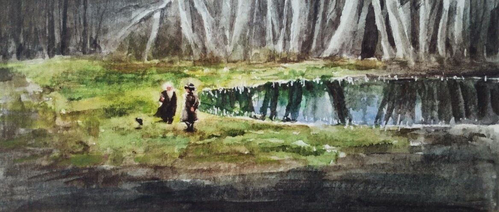

奥本海默
昨天在家终于把《奥本海默》看完啦~
虽然很长，但也就仨小时，我居然断断续续地看了两周
其实是很好看的，只是我的时间有点零散，看到后面都有点忘了谁对谁。
昨天又重头看了一遍 ，确实很好看，
，确实很好看，
印象最深刻的就是电影最后，奥本海默和爱因斯坦在湖边聊天的这部分。

其实这个场景在电影最开始就出现了，但是是以纯黑白的形式出现的，所以当最后全彩色的场景出现时就有一种强烈的反差和讽刺。
两个物理学家的世界是那么纯粹，但在某些人的眼里却是充满阴谋和猜忌的。
不过电影主要讲的是奥本海默主导研制世界上第一颗原子弹的故事，
电影里面这个场景想表达的意思可能也不是我理解的这样，
但我只是想用水彩表达一下对这个场景的喜爱~
好啦，今天就到这，
电影很好看，推荐给大家~3h一口气看完哦~hhh
欢迎点赞、转发or给个“在看”~晚安~